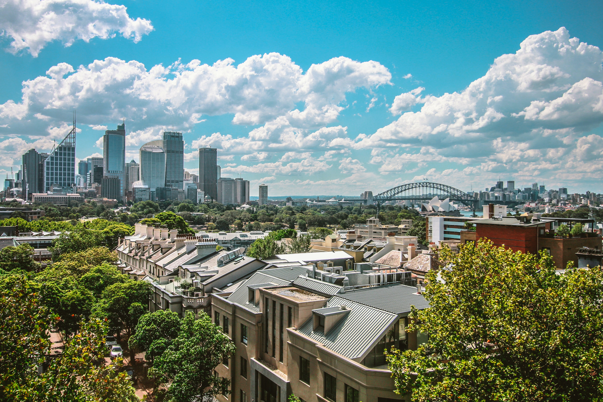
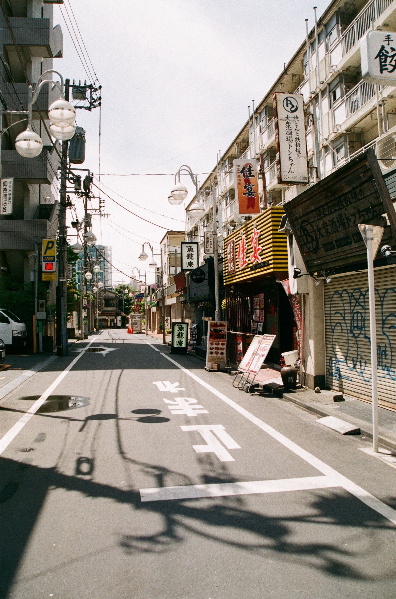

Travelagent.lu
Discover the world
Amsterdam
Amsterdam, city and port, western Netherlands, located on the IJsselmeer and connected to the North Sea. It is the capital and the principal commercial and financial centre of the Netherlands. To the scores of tourists who visit each year, Amsterdam is known for its historical attractions, for its collections of great art, and for the distinctive colour and flavour of its old sections, which have been so well preserved. However, visitors to the city also see a crowded metropolis beset by environmental pollution, traffic congestion, and housing shortages. It is easy to describe Amsterdam, which is more than 700 years old, as a living museum of a bygone age and to praise the eternal beauty of the centuries-old canals, the ancient patrician houses, and the atmosphere of freedom and tolerance, but the modern city is still working out solutions to the pressing urban problems that confront it.read more
Dubai
Dubai is a city of superlatives. Dubai has the world's tallest skyscrapers, largest shopping malls. Dubai has a very beautiful natural beach. The average temperature in Dubai is 28℃. Dubai is know for being the home of many famous and rich people who want to live the lifestyle of the superlative. Which means it is not unusual to see great cars and things you don't see every day. more info
Shanghai
Shanghai is famous for its beautiful skyline and its tourist attractions. Shanghai is a mix of modern and historical places. It is also chinas biggest city. if you thing you don't want to go to china because of the poverty in some city parts shanghai is the perfect destination because it is chinas richest city. Shanghai is a shopping paradis from luxury shooping areas to what every you can think of. The out side market of shanhaiis also worth a look. more info
The Maldives
The Maldives have have some of the most beautiful and cleanest beaches of the world. which means it is the perfect place to do any kind of water sports like jet-skiing, water skiing, diving, swimming with sharks, and diving into coral reefs. Besides the beach and the water the maldives are famous for its vibrant culture. The maldives are the perfect place to have a fun but relaxing vacation and brake from your everyday life. more info
London
London is very spercial. It has many attractions which take days to see all of them like the tower of london, Tate modern, Buckingham Palace, big ben and the British Museum. The best time to travel ther is during the warm time of the year because it is also know for is rain, but be aware that this is also the busiest and most expensive time.Read more
Paris
The City of Paris is know for love it is the worlds city of love. Paris has the iconic Eiffel Tower,the louvre, and the Arc de Triomphe. An other attraction of Paris is the Palace de Versailles about 17km south of the city centre. You can also visit centuries-old churches. But do not forget to stop by a café and breakfast and drink a café or eat a croissant.read more
Tokyo

Sydney
Tokyo
Roby Trierweiler ©
All pictures are from a copy right free website© https://www.pexels.com/